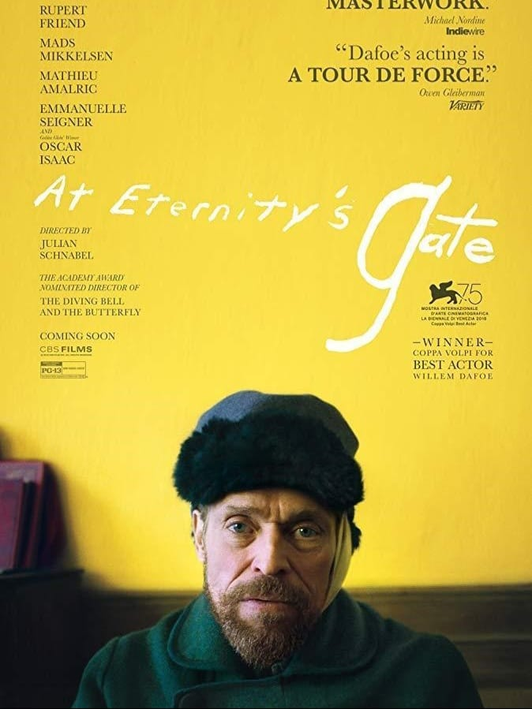
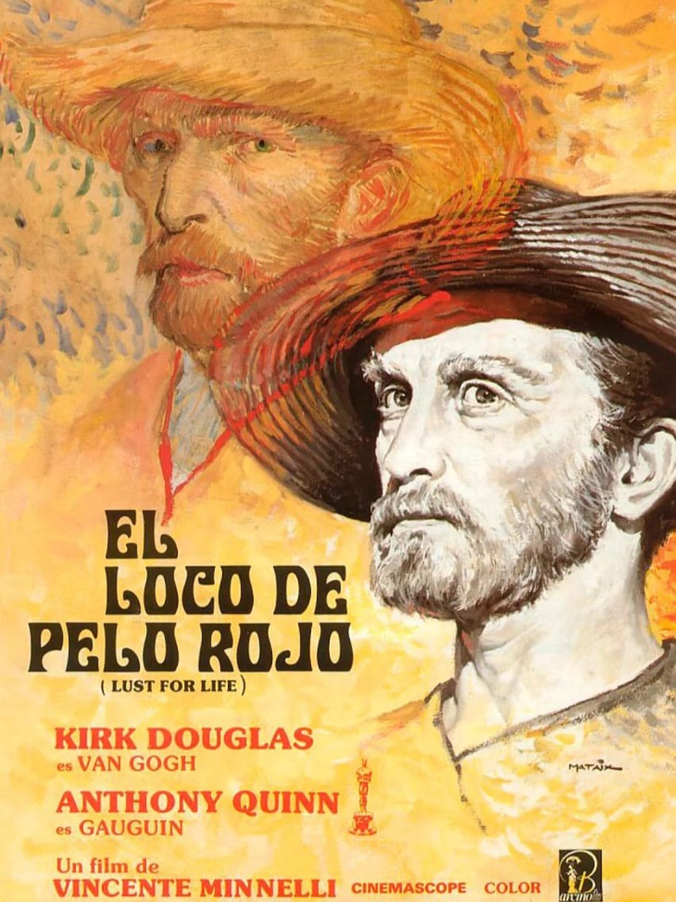
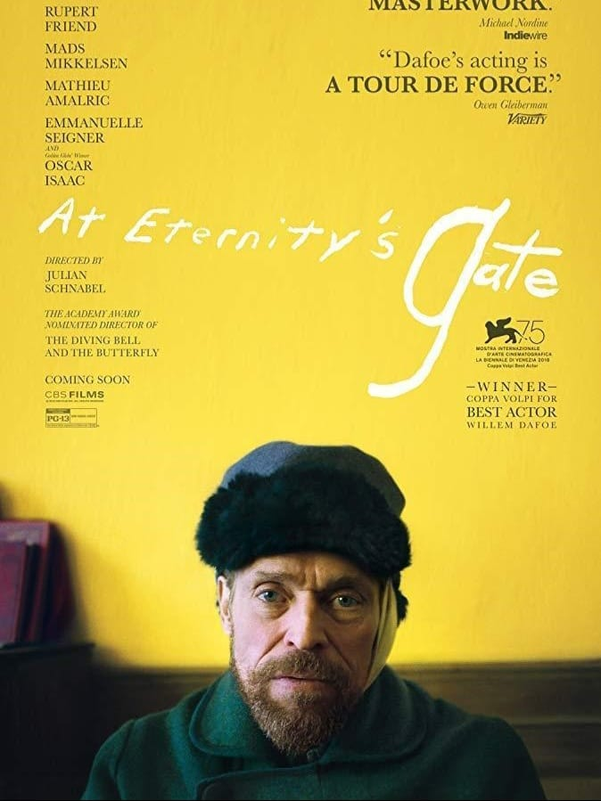
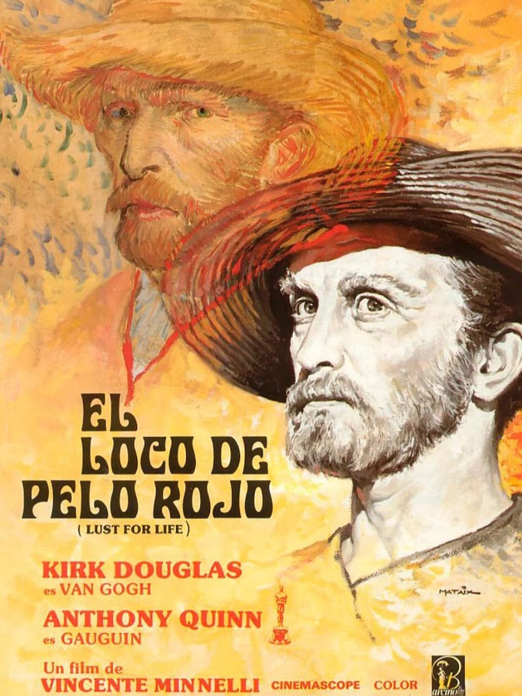
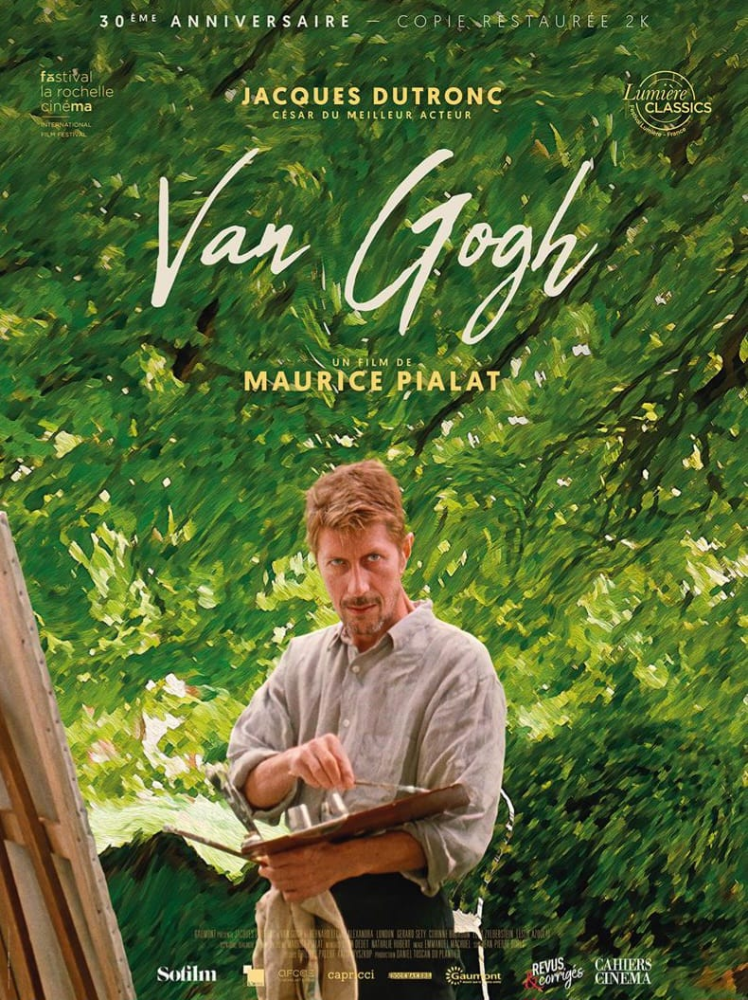
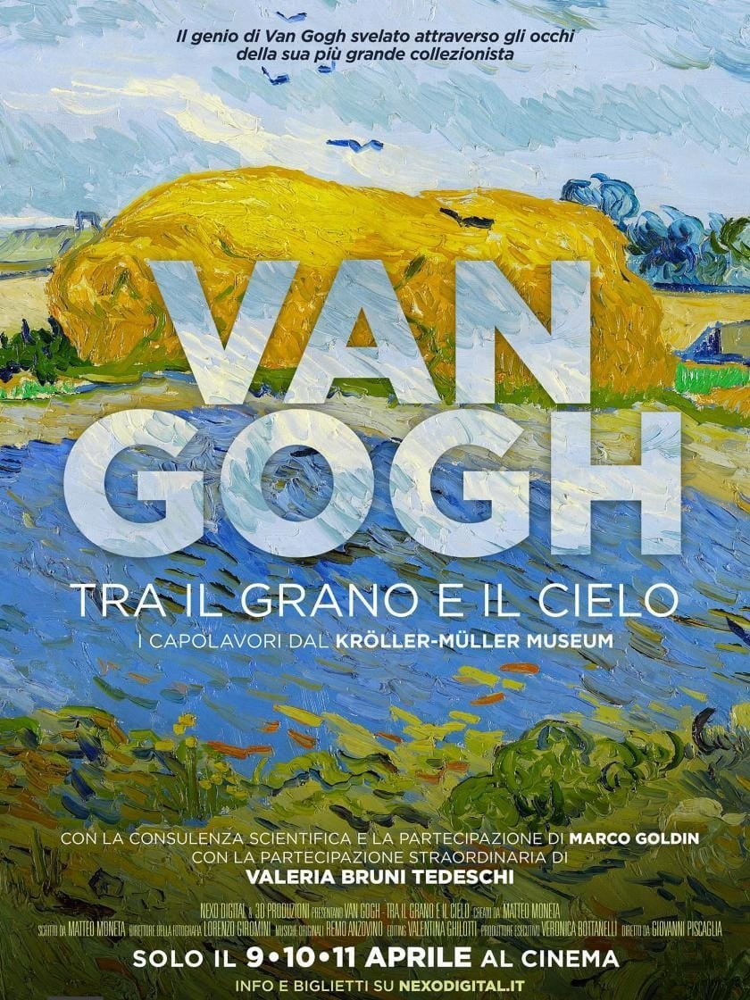
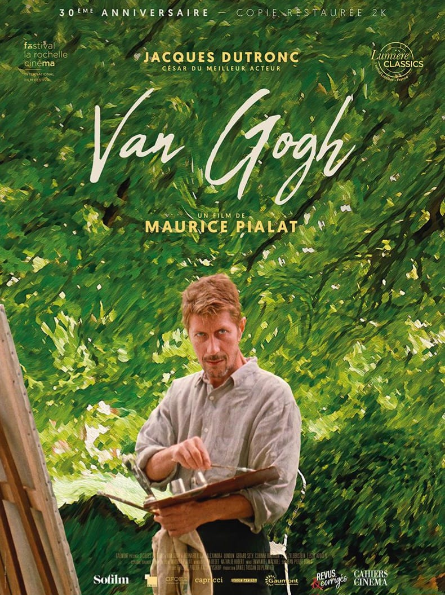
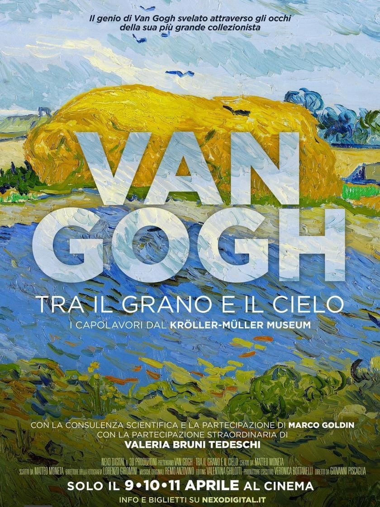

Envidiaba a los Japoneses por su arte, hasta el punto de que realizó varios grabados y pinturas que llamo japonaiserie.
Al describir el arte japonés dijo "Envidio a los japoneses por la increïble claridad de la que estan impregnados todos sus trabajos. Nunca resultan aburridos ni hacen el efecto de haberlos realizado deprisa. Su estilo estan sencillo como respirar.
🀦𓍢ִ໋ Pinturas 𓍢ִ໋🀦
Noche estrellada sobre el ródano (1888)
Pintado en 1888 se encuentra en el Museo de Orsay de París. Representa Arles de noche a la orilla del río, cerca de la casa amarilla en la que vivía en ese momento.
Almendro en flor (1890)
Otro de sus cuadros más famosos fue pintado en 1890. Se lo dedicó a su recién nacido sobrino, por eso tenía un tono más positivo que el resto, y estaba inspirado en el arte japonés.

Los comedores de patatas (1885)
Pintado en 1885 es una de sus primeras obras y retrata a una familia campesina comiendo. Es una de las obras maestras del artista y se encuentra en el Museo Van Gogh de Ámsterdam.
⚘. Algunas peliculas .⚘
 



 



¡Muchas gracias por visitarnos!